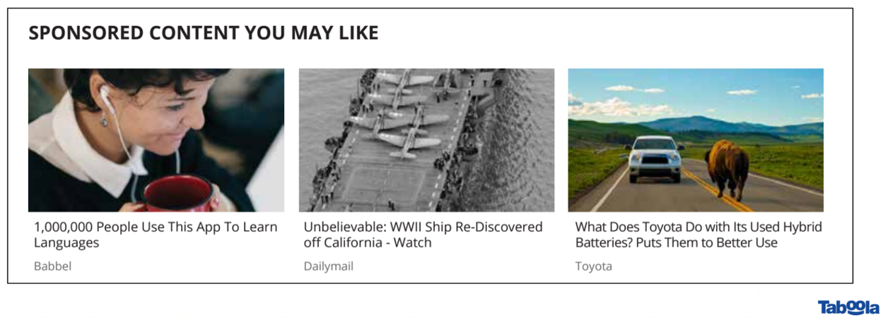
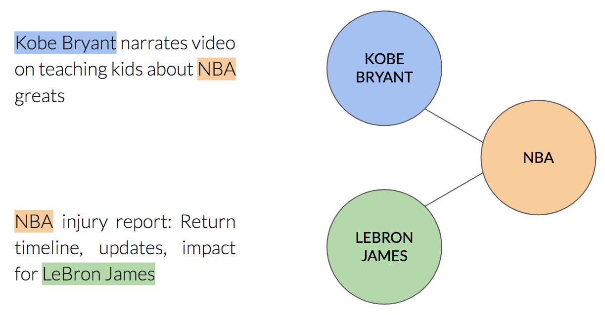
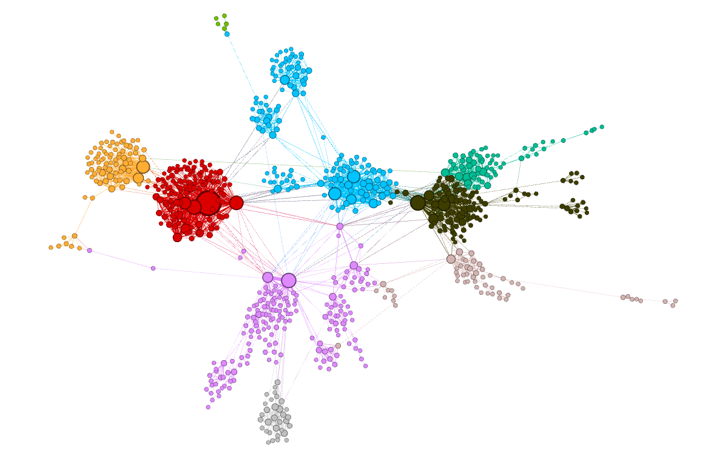
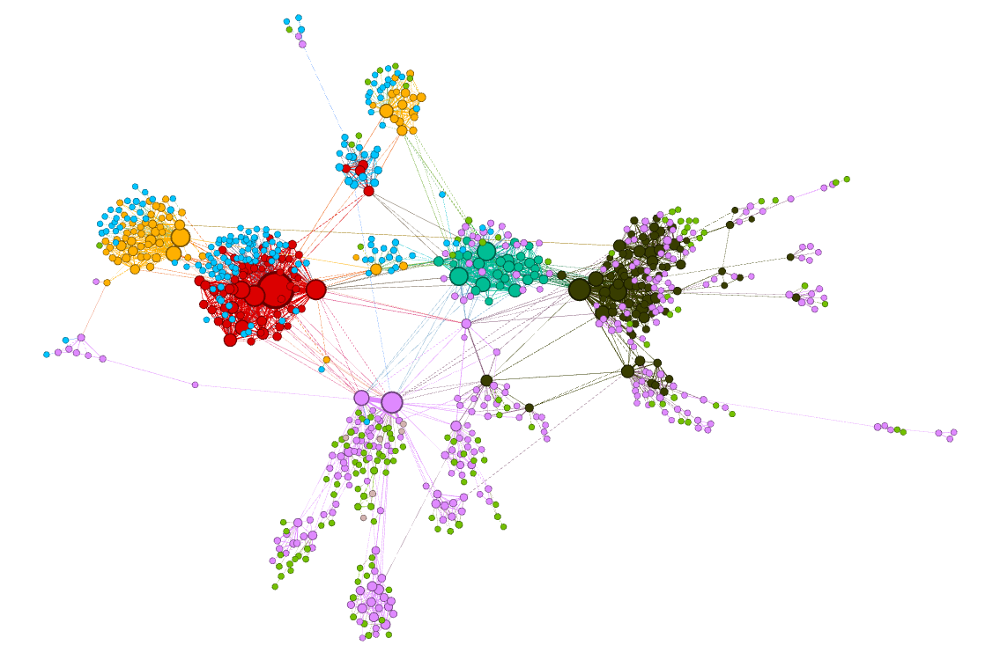
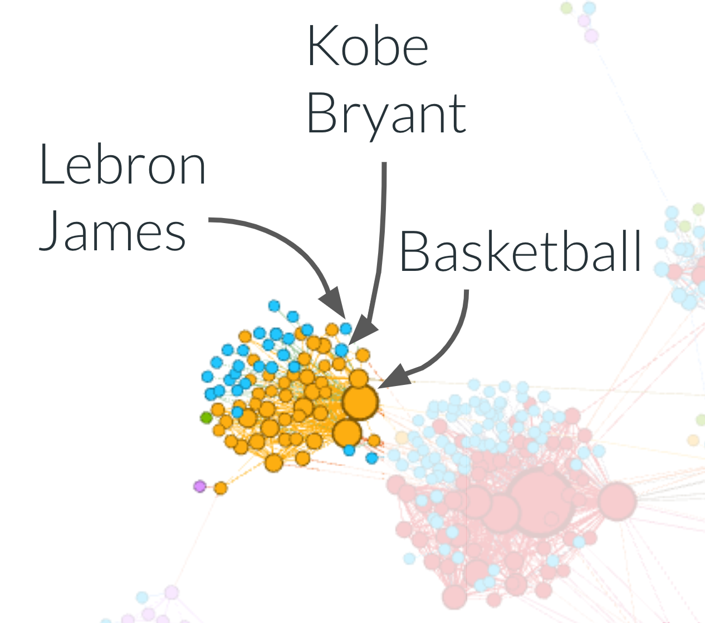
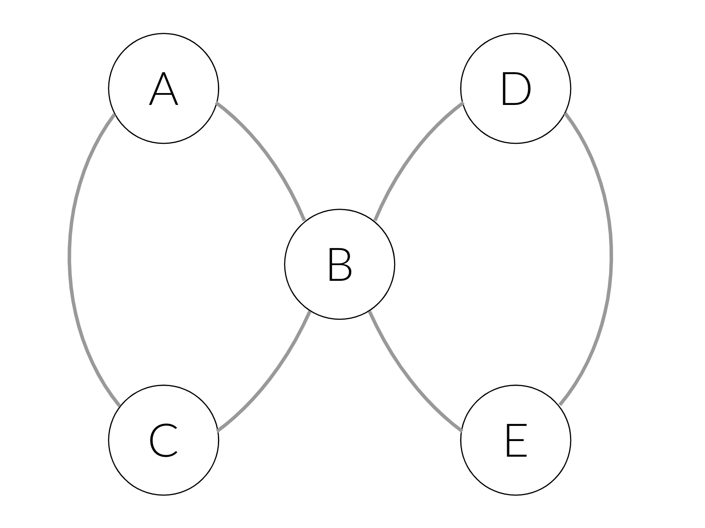

In the last couple of years deep learning (DL) has become a main enabler for applications in many domains such as vision, NLP, audio, click stream data etc. Recently researchers started to successfully apply deep learning methods to graph datasets in domains like social networks, recommender systems and biology, where data is inherently structured in a graphical way.
So how do Graph Neural Networks work? Why do we need them?
The Premise of Deep Learning
In machine learning tasks involving graphical data, we usually want to describe each node in the graph in a way that allows us to feed it into some machine learning algorithm. Without DL, one would have to manually extract features, such as the number of neighbors a node has. But this is a laborious job.
This is where DL shines. It automatically exploits the structure of the graph in order to extract features for each node. These features are called embeddings.
The interesting thing is, that even if you have absolutely no information about the nodes, you can still use DL to extract embeddings. The structure of the graph, that is — the connectivity patterns, hold viable information.
So how can we use the structure to extract information? Can the context of each node within the graph really help us?
Learning from Context
One well known algorithm that extracts information about entities using context alone is word2vec. The input to word2vec is a set of sentences, and the output is an embedding for each word. Similarly to the way text describes the context of each word via the words surrounding it, graphs describe the context of each node via neighbor nodes.
While in text words appear in linear order, in graphs it’s not the case. There’s no natural order between neighbor nodes. So we can’t use word2vec... Or can we?
Reduction like a Badass Mathematician
We can apply reduction from the graphical structure of our data into a linear structure such that the information encoded in the graphical structure isn’t lost. Doing so, we’ll be able to use good old word2vec.
The key point is to perform random walks in the graph. Each walk starts at a random node, and performs a series of steps, where each step goes to a random neighbor. Each random walk forms a sentence that can be fed into word2vec. This algorithm is called node2vec. There are more details in the process, which you can read about in the original paper.
Case study
Taboola’s content recommender system gathers lots of data, some of which can be represented in a graphical manner. Let’s inspect one type of data as a case study for using node2vec.
Taboola recommends articles in a widget shown in publishers’ websites:

Each article has named entities — the entities described by the title. For example, the item “the cutest dogs on the planet” contains the entities “dog” and “planet”. Each named entity can appear in many different items.
We can describe this relationship using a graph in the following way: each node will be a named entity, and there will be an edge between two nodes if the two named entities appear in the same item:

Now that we are able to describe our data in a graphical manner, let’s run node2vec to see what insights we can learn out of the data. You can find the working code here.
After learning node embeddings, we can use them as features for a downstream task, e.g. CTR (Click Through Rate) prediction. Although it could benefit the model, it’ll be hard to understand the qualities learned by node2vec.
Another option would be to cluster similar embeddings together using K-means, and color the nodes according to their associated cluster:

Cool! The clusters captured by node2vec seem to be homogeneous. In other words, nodes that are close to each other in the graph are also close to each other in the embedding space. Take for instance the orange cluster — all of its named entities are related to basketball.
You might wonder what is the benefit of using node2vec over classical graphical algorithms, such as community detection algorithms (e.g., the Girvan-Newman algorithm). Capturing the community each node belongs to can definitely be done using such algorithms, there’s nothing wrong with it. Actually, that’s exactly feature engineering. And we already know that DL can save you the time of carefully handcrafting such features. So why not enjoy this benefit? We should also keep in mind that node2vec learns high dimensional embeddings. These embeddings are much richer than merely community belonging.
Taking Another Approach
Using node2vec in this use case might not be the first idea that comes to mind. One might suggest to simply use word2vec, where each sentence is the sequence of named entities inside a single item. In this approach we don’t treat the data as having a graphical structure. So what’s the difference between this approach — which is valid, and node2vec?
If we think about it, each sentence we generate in the word2vec approach is a walk in the graph we’ve defined earlier. node2vec also defines walks on the same graph. So they are the same, right? Let’s have a look at the clusters we get by the word2vec approach:

Now the “basketball” cluster is less homogenous — it contains both orange and blue nodes. The named entity “Basketball” for example was colored orange, while the basketball players “Lebron James” and “Kobe Bryant” were colored blue!

But why did this happen?
In this approach each walk in the graph is composed only of named entities that
appear together in a single item. It means we are limited to walks that don’t go
further than distance 1 from the starting node. In node2vec, we don’t have that
limit.
Since each approach uses a different kind of walks, the learned
embeddings capture a different kind of information.
To make it more concrete, consider the following example: say we have two items — one with named entities A, B, C and another with D, B, E. These items induce the following graph:

In the simple word2vec approach we’ll generate the following sentences: [A, B, C] and [D, B, E]. In the node2vec approach we could also get sentences like [A, B, E]. If we fetch the latter into the training process, we’ll learn that E and C are interchangeable: the prefix [A, B] will be able to predict both C and E. Therefore, C and E will get similar embeddings, and will be clustered together.
Takeway
Using the right data structure to represent your data is important. Each data structure implies a different learning algorithm, or in other words — introduces a different inductive bias.
Identifying your data has a certain structure, so you can use the right tool for the job, might be challenging.
Since so many real world datasets are naturally represented as graphs, we think Graph Neural Networks are a must-have in our tool box as data scientists.
Originally published at engineering.taboola.com by me and Zohar Komarovsky.
Comments !